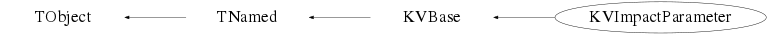
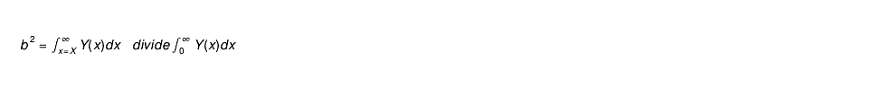

class KVImpactParameter: public KVBase
KVImpactParameter
Impact parameter analysis tools
Use a histogram containing the distribution of some observable strongly-correlated with the impact parameter in order to transform distributions of said observable into impact parameter distributions (using the method of C. Cavata et al., Phys. Rev. C42, 1760 (1990)), and to calculate the evolution of other quantities as a function of the impact parameter.To use, start with a pointer to a 1-D histogram of the observable, TH1* data:
KVImpactParameter ip(data);
ip.MakeScale(npoints, bmax);
The MakeScale method calculates the relationship between the observable and the
impact parameter, using
To obtain the impact parameter distribution for some selection of events, you need the distribution of the observable for the selection, TH1* obs_sel, and then use:
TH1* ip_dist_sel = ip.GetIPDistribution(obs_sel);
To obtain the impact-parameter evolution of some quantity, take a TH2* obscor, containing
the bidimensional plot of the quantity as a function of the observable, and then use
TGraph* ip_evol = ip.GetIPEvolution(obscor, "GetMean");
e.g. to have the mean value of the quantity as a function of impact parameter.
Function Members (Methods)
public:
| KVImpactParameter(const KVImpactParameter&) | |
| KVImpactParameter(TH1*, Option_t* evol = "D") | |
| virtual | ~KVImpactParameter() |
| void | TObject::AbstractMethod(const char* method) const |
| virtual void | TObject::AppendPad(Option_t* option = "") |
| static Bool_t | KVBase::AreEqual(Double_t x, Double_t y, Long64_t maxdif = 1) |
| static Bool_t | KVBase::ArrContainsValue(Int_t n, Int_t* arr, Int_t val) |
| static void | KVBase::BackupFileWithDate(const Char_t* path) |
| virtual void | TObject::Browse(TBrowser* b) |
| Double_t | BTransform(Double_t*, Double_t*) |
| static TClass* | Class() |
| virtual const char* | TObject::ClassName() const |
| virtual void | KVBase::Clear(Option_t* opt = "") |
| virtual TObject* | TNamed::Clone(const char* newname = "") const |
| static void | KVBase::CombineFiles(const Char_t* file1, const Char_t* file2, const Char_t* newfilename, Bool_t keep = kTRUE) |
| virtual Int_t | TNamed::Compare(const TObject* obj) const |
| virtual void | KVBase::Copy(TObject&) const |
| virtual void | TObject::Delete(Option_t* option = "")MENU |
| virtual Int_t | TObject::DistancetoPrimitive(Int_t px, Int_t py) |
| virtual void | TObject::Draw(Option_t* option = "") |
| virtual void | TObject::DrawClass() constMENU |
| virtual TObject* | TObject::DrawClone(Option_t* option = "") constMENU |
| virtual void | TObject::Dump() constMENU |
| virtual void | TObject::Error(const char* method, const char* msgfmt) const |
| virtual void | TObject::Execute(const char* method, const char* params, Int_t* error = 0) |
| virtual void | TObject::Execute(TMethod* method, TObjArray* params, Int_t* error = 0) |
| virtual void | TObject::ExecuteEvent(Int_t event, Int_t px, Int_t py) |
| virtual void | TObject::Fatal(const char* method, const char* msgfmt) const |
| virtual void | TNamed::FillBuffer(char*& buffer) |
| static Bool_t | KVBase::FindClassSourceFiles(const Char_t* class_name, KVString& imp_file, KVString& dec_file, const Char_t* dir_name = ".") |
| static Bool_t | KVBase::FindExecutable(TString& exec, const Char_t* path = "$(PATH)") |
| static const Char_t* | KVBase::FindFile(const Char_t* search, TString& wfil) |
| virtual TObject* | TObject::FindObject(const char* name) const |
| virtual TObject* | TObject::FindObject(const TObject* obj) const |
| static const Char_t* | KVBase::GetBINDIRFilePath(const Char_t* namefile = "") |
| Double_t | GetCrossSection(Double_t obs) |
| static const Char_t* | KVBase::GetDATABASEFilePath() |
| static const Char_t* | KVBase::GetDATADIRFilePath(const Char_t* namefile = "") |
| virtual Option_t* | TObject::GetDrawOption() const |
| static Long_t | TObject::GetDtorOnly() |
| static const Char_t* | KVBase::GetETCDIRFilePath(const Char_t* namefile = "") |
| virtual const char* | TObject::GetIconName() const |
| Double_t | GetImpactParameter(Double_t obs) |
| static const Char_t* | KVBase::GetINCDIRFilePath(const Char_t* namefile = "") |
| TH1* | GetIPDistribution(TH1* obs, Int_t nbinx = 100, Option_t* norm = "") |
| TGraph* | GetIPEvolution(TH2* obscor, TString moment, TString axis = "Y") |
| static Double_t | GetIPFromXSec(Double_t xsec) |
| static const Char_t* | KVBase::GetKVBuildDate() |
| static const Char_t* | KVBase::GetKVBuildDir() |
| static const Char_t* | KVBase::GetKVBuildType() |
| static const Char_t* | KVBase::GetKVBuildUser() |
| static const Char_t* | KVBase::GetKVSourceDir() |
| static const Char_t* | KVBase::GetKVVersion() |
| const Char_t* | KVBase::GetLabel() const |
| static const Char_t* | KVBase::GetLIBDIRFilePath(const Char_t* namefile = "") |
| static const Char_t* | KVBase::GetListOfPlugins(const Char_t* base) |
| virtual const char* | TNamed::GetName() const |
| UInt_t | KVBase::GetNumber() const |
| UInt_t | KVBase::GetNumberOfObjects() const |
| virtual TObject* | KVBase::GetObject() const |
| virtual char* | TObject::GetObjectInfo(Int_t px, Int_t py) const |
| static Bool_t | TObject::GetObjectStat() |
| Double_t | GetObservable(Double_t b) |
| Double_t | GetObservableXSec(Double_t sigma) |
| virtual Option_t* | TObject::GetOption() const |
| static const Char_t* | KVBase::GetPluginURI(const Char_t* base, const Char_t* plugin) |
| TGraph* | GetScale() const |
| static void | KVBase::GetTempFileName(TString& base) |
| static const Char_t* | KVBase::GetTEMPLATEDIRFilePath(const Char_t* namefile = "") |
| virtual const char* | TNamed::GetTitle() const |
| TF1* | GetTransFunc() const |
| const Char_t* | KVBase::GetType() const |
| virtual UInt_t | TObject::GetUniqueID() const |
| static const Char_t* | KVBase::GetWORKDIRFilePath(const Char_t* namefile = "") |
| TH1* | GetXSecDistribution(TH1* obs, Int_t nbinx = 100, Option_t* norm = "") |
| TGraph* | GetXSecEvolution(TH2* obscor, TString moment, TString axis = "Y") |
| static Double_t | GetXSecFromIP(Double_t bmax) |
| TGraph* | GetXSecScale() const |
| TF1* | GetXSecTransFunc() const |
| static const Char_t* | KVBase::gitBranch() |
| static const Char_t* | KVBase::gitCommit() |
| virtual Bool_t | TObject::HandleTimer(TTimer* timer) |
| virtual ULong_t | TNamed::Hash() const |
| Bool_t | KVBase::HasLabel() const |
| virtual void | TObject::Info(const char* method, const char* msgfmt) const |
| virtual Bool_t | TObject::InheritsFrom(const char* classname) const |
| virtual Bool_t | TObject::InheritsFrom(const TClass* cl) const |
| static void | KVBase::InitEnvironment() |
| virtual void | TObject::Inspect() constMENU |
| void | TObject::InvertBit(UInt_t f) |
| virtual TClass* | IsA() const |
| virtual Bool_t | KVBase::IsCalled(const Char_t* name) const |
| virtual Bool_t | TObject::IsEqual(const TObject* obj) const |
| virtual Bool_t | TObject::IsFolder() const |
| Bool_t | TObject::IsOnHeap() const |
| virtual Bool_t | TNamed::IsSortable() const |
| virtual Bool_t | KVBase::IsType(const Char_t* typ) const |
| Bool_t | TObject::IsZombie() const |
| virtual void | KVBase::List() |
| static TPluginHandler* | KVBase::LoadPlugin(const Char_t* base, const Char_t* uri = "0") |
| virtual void | TNamed::ls(Option_t* option = "") const |
| void | MakeAbsoluteScale(Int_t npoints = 100, Double_t bmax = 1.0) |
| void | MakeScale(Int_t npoints = 100, Double_t bmax = 1.0) |
| void | TObject::MayNotUse(const char* method) const |
| virtual Bool_t | TObject::Notify() |
| void | TObject::Obsolete(const char* method, const char* asOfVers, const char* removedFromVers) const |
| static Bool_t | KVBase::OpenContextMenu(const char* method, TObject* obj, const char* alt_method_name = "") |
| static void | KVBase::OpenTempFile(TString& base, ofstream& fp) |
| static void | TObject::operator delete(void* ptr) |
| static void | TObject::operator delete(void* ptr, void* vp) |
| static void | TObject::operator delete[](void* ptr) |
| static void | TObject::operator delete[](void* ptr, void* vp) |
| void* | TObject::operator new(size_t sz) |
| void* | TObject::operator new(size_t sz, void* vp) |
| void* | TObject::operator new[](size_t sz) |
| void* | TObject::operator new[](size_t sz, void* vp) |
| KVImpactParameter& | operator=(const KVImpactParameter&) |
| virtual void | TObject::Paint(Option_t* option = "") |
| virtual void | TObject::Pop() |
| virtual void | KVBase::Print(Option_t* option = "") const |
| virtual Int_t | TObject::Read(const char* name) |
| virtual void | TObject::RecursiveRemove(TObject* obj) |
| void | TObject::ResetBit(UInt_t f) |
| virtual void | TObject::SaveAs(const char* filename = "", Option_t* option = "") constMENU |
| virtual void | TObject::SavePrimitive(ostream& out, Option_t* option = "") |
| static Bool_t | KVBase::SearchAndOpenKVFile(const Char_t* name, ifstream& file, const Char_t* kvsubdir = "", KVLockfile* locks = 0) |
| static Bool_t | KVBase::SearchAndOpenKVFile(const Char_t* name, ofstream& file, const Char_t* kvsubdir = "", KVLockfile* locks = 0) |
| static Bool_t | KVBase::SearchKVFile(const Char_t* name, TString& fullpath, const Char_t* kvsubdir = "") |
| void | TObject::SetBit(UInt_t f) |
| void | TObject::SetBit(UInt_t f, Bool_t set) |
| virtual void | TObject::SetDrawOption(Option_t* option = "")MENU |
| static void | TObject::SetDtorOnly(void* obj) |
| void | KVBase::SetLabel(const Char_t* lab) |
| virtual void | TNamed::SetName(const char* name)MENU |
| virtual void | TNamed::SetNameTitle(const char* name, const char* title) |
| virtual void | KVBase::SetNumber(UInt_t num) |
| static void | TObject::SetObjectStat(Bool_t stat) |
| virtual void | TNamed::SetTitle(const char* title = "")MENU |
| void | KVBase::SetType(const Char_t* str) |
| virtual void | TObject::SetUniqueID(UInt_t uid) |
| virtual void | ShowMembers(TMemberInspector&) |
| virtual Int_t | TNamed::Sizeof() const |
| virtual void | Streamer(TBuffer&) |
| void | StreamerNVirtual(TBuffer& ClassDef_StreamerNVirtual_b) |
| virtual void | TObject::SysError(const char* method, const char* msgfmt) const |
| Bool_t | TObject::TestBit(UInt_t f) const |
| Int_t | TObject::TestBits(UInt_t f) const |
| virtual void | TObject::UseCurrentStyle() |
| virtual void | TObject::Warning(const char* method, const char* msgfmt) const |
| static const Char_t* | KVBase::WorkingDirectory() |
| virtual Int_t | TObject::Write(const char* name = 0, Int_t option = 0, Int_t bufsize = 0) |
| virtual Int_t | TObject::Write(const char* name = 0, Int_t option = 0, Int_t bufsize = 0) const |
| Double_t | XTransform(Double_t*, Double_t*) |
protected:
| virtual void | TObject::DoError(int level, const char* location, const char* fmt, va_list va) const |
| void | TObject::MakeZombie() |
private:
| void | make_scale(Int_t npoints) |
Data Members
public:
| enum KVBase::EKaliVedaBits { | kIsKaliVedaObject | |
| }; | ||
| enum TObject::EStatusBits { | kCanDelete | |
| kMustCleanup | ||
| kObjInCanvas | ||
| kIsReferenced | ||
| kHasUUID | ||
| kCannotPick | ||
| kNoContextMenu | ||
| kInvalidObject | ||
| }; | ||
| enum TObject::[unnamed] { | kIsOnHeap | |
| kNotDeleted | ||
| kZombie | ||
| kBitMask | ||
| kSingleKey | ||
| kOverwrite | ||
| kWriteDelete | ||
| }; |
protected:
| TString | KVBase::fLabel | label for the object |
| TString | TNamed::fName | object identifier |
| TString | TNamed::fTitle | object title |
private:
| Double_t | Bmax | maximum of ip scale |
| KVHistoManipulator | HM | |
| Double_t | Smax | maximum of cross-section scale |
| TH1* | fData | histogram containing distribution of ip-related observable |
| TString | fEvol | how the observable evolves with b |
| TGraph* | fIPScale | derived relation between observable and impact-parameter |
| TF1* | fObsTransform | function for transforming observable into impact parameter |
| TF1* | fObsTransformXSec | function for transforming observable into cross-section |
| TGraph* | fXSecScale | derived relation between observable and cross-section |
Class Charts
{kind=link}
{kind=link}
{kind=link}
{kind=link}

Function documentation
KVImpactParameter(TH1* , Option_t* evol = "D")
Default constructor Argument 'data' is pointer to data histogram containing distribution of the observable which is used to calculate the impact parameter. Usually, this will be an observable which is supposed to increase or decrease monotonically as a function of b. By default, evol = "D" which means observable increases as b decreases. Call with evol = "C" if the observable increases as b increases.
void MakeScale(Int_t npoints = 100, Double_t bmax = 1.0)
Calculate the relationship between the impact parameter and the observable whose distribution is contained in the histogram fData. For a given value X of the observable x, the reduced impact parameter b_hat is calculated from the distribution of x, Y(x), using the following formula:  npoints = number of points for which to calculate the impact parameter. The greater the number of points, the more accurate the results. Default value is 100. Maximum value is number of bins in histogram of observable, fData. bmax is the maximum reduced impact parameter for the data. To obtain absolute values of impact parameter/cross-section, use MakeAbsoluteScale.
void make_scale(Int_t npoints)
void MakeAbsoluteScale(Int_t npoints = 100, Double_t bmax = 1.0)
Double_t BTransform(Double_t* , Double_t* )
Function using the TGraph calculated with MakeScale/MakeAbsoluteScale in order to transform distributions of the observable histogrammed in fData into distributions of the impact parameter. This function is used to generate the TF1 fObsTransform
Double_t XTransform(Double_t* , Double_t* )
Function using the TGraph calculated with MakeScale/MakeAbsoluteScale in order to transform distributions of the observable histogrammed in fData into distributions of cross-section. This function is used to generate the TF1 fObsTransformXsec
TH1* GetIPDistribution(TH1* obs, Int_t nbinx = 100, Option_t* norm = "")
Transform the distribution of the observable contained in the histogram 'obs' into a distribution of the impact parameter. User's responsibility to delete histo. nbinx = number of bins in I.P. histo (default = 100) norm = "" (default) : no adjustment is made for the change in bin width due to the transformation norm = "width" : bin contents are adjusted for width change, so that the integral of the histogram contents taking into account the bin width (i.e. TH1::Integral("width")) is the same.
TGraph* GetIPEvolution(TH2* obscor, TString moment, TString axis = "Y")
obscor = pointer to histogram containing bidim correlating some observable Y with the observable used to calculate the impact parameter. Return pointer to TGraph giving evolution of any given moment of Y as a function of the impact parameter, with moment = "GetMean", "GetRMS", "GetKurtosis", etc. (methods of TH1) If the impact parameter observable is on the Y-axis of obscor, use axis="X" (by default axis="Y", i.e. we assume that the I.P. observable is on the x axis).
TH1* GetXSecDistribution(TH1* obs, Int_t nbinx = 100, Option_t* norm = "")
Transform the distribution of the observable contained in the histogram 'obs' into a distribution of cross-section User's responsibility to delete histo. nbinx = number of bins in I.P. histo (default = 100) norm = "" (default) : no adjustment is made for the change in bin width due to the transformation norm = "width" : bin contents are adjusted for width change, so that the integral of the histogram contents taking into account the bin width (i.e. TH1::Integral("width")) is the same.
TGraph* GetXSecEvolution(TH2* obscor, TString moment, TString axis = "Y")
obscor = pointer to histogram containing bidim correlating some observable Y with the observable used to calculate the impact parameter. Return pointer to TGraph giving evolution of any given moment of Y as a function of cross section, with moment = "GetMean", "GetRMS", "GetKurtosis", etc. (methods of TH1) If the impact parameter observable is on the Y-axis of obscor, use axis="X" (by default axis="Y", i.e. we assume that the I.P. observable is on the x axis).
KVImpactParameter(TH1* , Option_t* evol = "D")
TGraph* GetScale() const
TGraph* GetXSecScale() const
TF1* GetXSecTransFunc() const
return pointer to function giving croos section for any value of observable
Double_t GetImpactParameter(Double_t obs)
Calculate value of impact parameter for given value of the observable.
Double_t GetCrossSection(Double_t obs)
Calculate value of cross section for given value of the observable.
Double_t GetObservable(Double_t b)
Calculate value of observable corresponding to given value of impact parameter.
Double_t GetObservableXSec(Double_t sigma)
Calculate value of observable corresponding to given value of cross section.
Double_t GetXSecFromIP(Double_t bmax)
static utility function returns cross-section in [mb] corresponding to impact parameter in [fm]
Double_t GetIPFromXSec(Double_t xsec)
static utility function returns impact parameter in [fm] corresponding to cross-section in [mb]